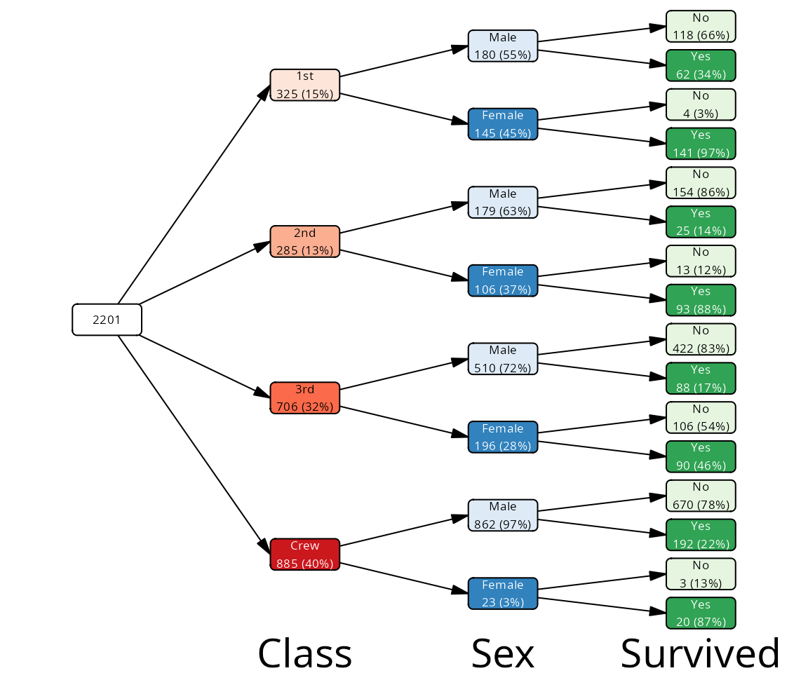
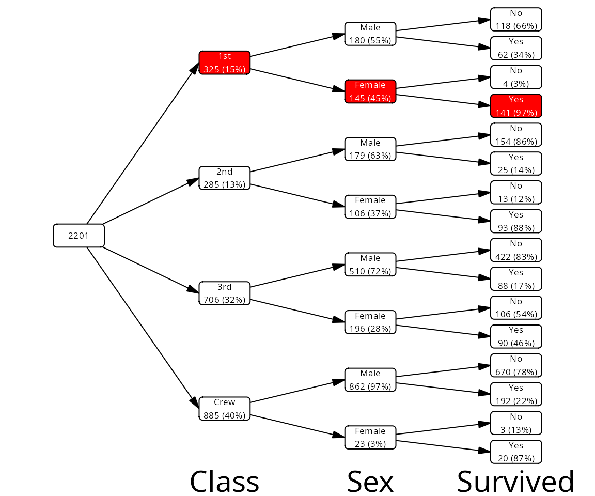
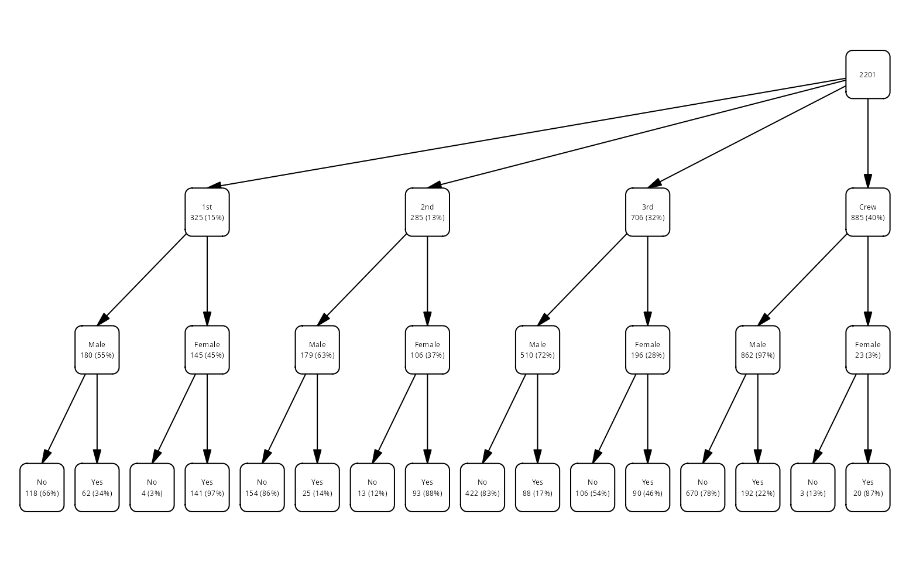
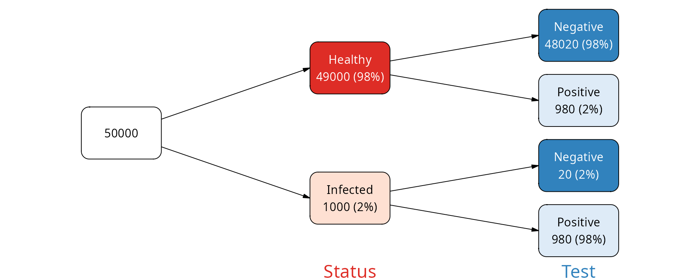
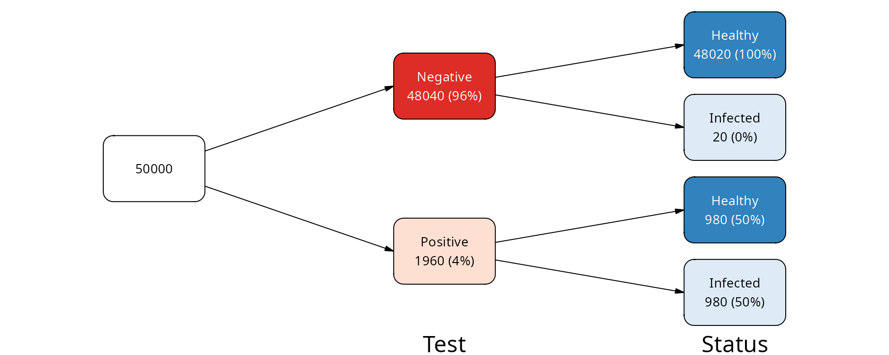
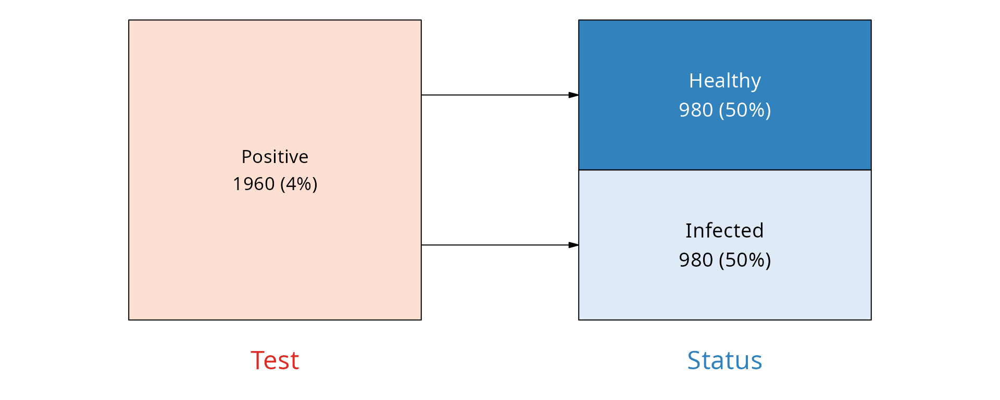

What are vtrees?
what_are_vtrees.RmdVtrees as representations of categorical data
The main purpose of vtrees is to understand and visualize hierarchical, categorical data. A vtree is a tree diagram that shows how the data is split by the levels of categorical variables.
In the example most frequently used in the vtree package, the Titanic
data set, we have several categorical variables, such as
Class (passenger class), Sex (gender) and
Survived (whether a passenger survived the sinking of the
Titanic). You may ask, for example, how many female passengers who were
traveling in the first class survived? What was their percentage among
all first class female passengers?
cases <- cases_from_freqtable(Titanic)
head(cases)
#> # A tibble: 6 × 4
#> Class Sex Age Survived
#> <fct> <fct> <fct> <fct>
#> 1 3rd Male Child No
#> 2 3rd Male Child No
#> 3 3rd Male Child No
#> 4 3rd Male Child No
#> 5 3rd Male Child No
#> 6 3rd Male Child No
# female 1st class survivors
sum(cases$Class == "1st" & cases$Sex == "Female" & cases$Survived == "Yes")
#> [1] 141
# percentage
sum(cases$Class == "1st" & cases$Sex == "Female" & cases$Survived == "Yes") /
sum(cases$Class == "1st" & cases$Sex == "Female") * 100
#> [1] 97.24138Rather than calculating these numbers manually, we can visualize all that in one go on a vtree:

If you follow the path from the root node on the left, to the first class, to the female passengers, and then to the survivors, you will notice the percentage of survivors among the first class is what we calculated above:
vt |>
mark(path %in% c("root", "Class:1st", "Class:1st/Sex:Female",
"Class:1st/Sex:Female/Survived:Yes")) |>
mutate(fill = ifelse(mark, "red", "white")) |>
plot()
#> ℹ palette attribute is NULL
#> legend will be black and white
In a way, this is reminding of a consort diagram. We can style the above plot so it looks a bit more like a consort diagram:

FP / NPV example
The following example may convince you of the use vtree representation can have for your data.
Imagine a disease and a test that we have for that disease. How good is the test?
We can consider how often the test makes an error for an infected subject, incorrectly giving the negative result. This is called a false negative (FN). The probability of this error is called false negative rate (FNR), and its compliment the sensitivity: the more sensitive our test is, the less likely that a test result will be negative if the person is sick. Let’s assume that our test is highly sensitive, for example that the FNR is 2% (making sensitivity 98%).
Another type of the error is if we have a healthy subject, but the test is showing as positive. This value is the number of false positives (FP) divided by the total number of healthy people, also known as FPR - false positive rate. The complement of this value () is called specificity. Say, we have an outstanding test and the specificity is 98%, so the false positive rate is 2%.
OK, but there is more to the story. Whether a positive test result corresponds to a real patient or a false positive depends on how likely is that the person is actually healthy in reality. This is disease prevalence, how often the disease is encountered when people are tested. Say, that the disease is quite common, and the prevalence is 2%.
From this, assuming we performed screening tests on 5^{4} persons in a population, we get the following table:
| Status | Test | N |
|---|---|---|
| Infected | Positive | 980 |
| Infected | Negative | 20 |
| Healthy | Positive | 980 |
| Healthy | Negative | 48020 |
Here is how we can build our data:
FPR <- .02 # p that healthy is positive
FNR <- .02 # p that infected is negative
prevalence <- 1/50
N <- 50000
data <- tribble(
~ Status, ~ Test, ~ N,
"Infected", "Positive", round(prevalence * N * (1-FNR)),
"Infected", "Negative", round(prevalence * N * FNR),
"Healthy", "Positive", round((1 - prevalence) * N * FNR),
"Healthy", "Negative", round((1 - prevalence) * N * (1 - FNR))
)We can visualize this table as a vtree. Since it is a frequency
table, we need to use the vtree_from_freqtable() function1. For
starters, we will show the Status first, and then the Test result. This
will show us how many of the healthy persons were incorrectly classified
as positive, and how many of the infected persons were incorrectly
classified as negative.
vt <- vtree_from_freqtable(data,
Status, Test,
.freq_col = "N")
plot(vt)
As you can see, the percentages on the leaf nodes (right side of the plot) correspond to our FPR and FNR values. The percentages on the internal nodes correspond to the disease prevalence.
What if we were to inverse this question? What is the fraction of healthy people among those who tested positive, and vice versa - what is the fraction of infected people among those who tested negative?
vt2 <- vtree_from_freqtable(data,
Test, Status,
.freq_col = "N")
plot(vt2)
We see that among those who were tested negative, the large majority (practically 100%) were indeed healthy. This is the negative predictive value (NPV) of the test.
However, among those who were tested positive, only 50% were actually infected. This is the positive predictive value (PPV) of the test and it shows that despite the test being very specific and sensitive, when a person has a positive test result, there is more than a 50% chance that the person is actually healthy.
A proportional plot with the negative node pruned will hammer this point:
vt3 <- vt2 |> prune(Test == "Negative")
plot(vt3, layout="proportional", show_root = FALSE,
padding=.7, margins=c(.05, .05, .2, .05))